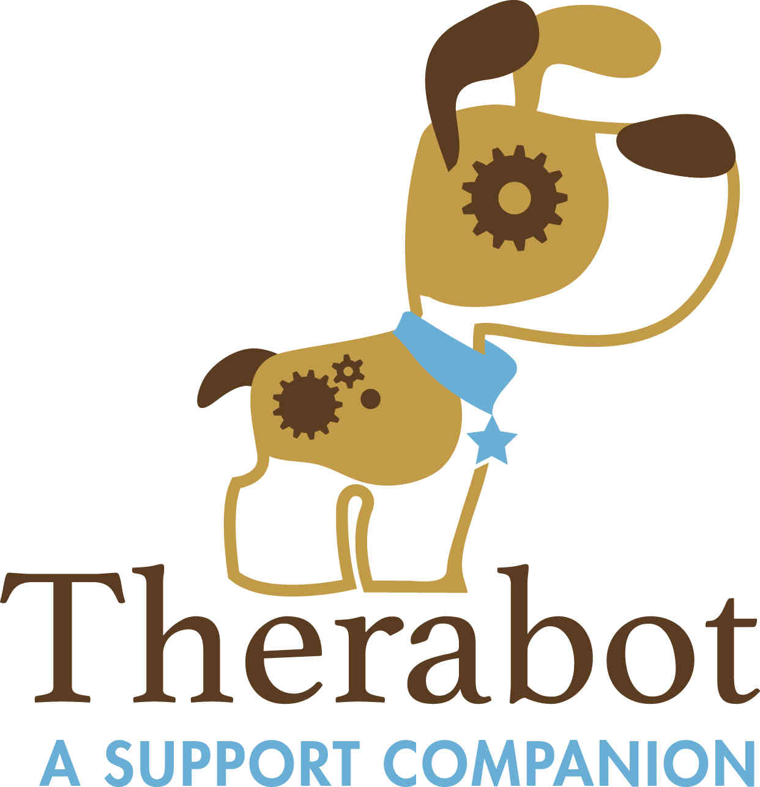
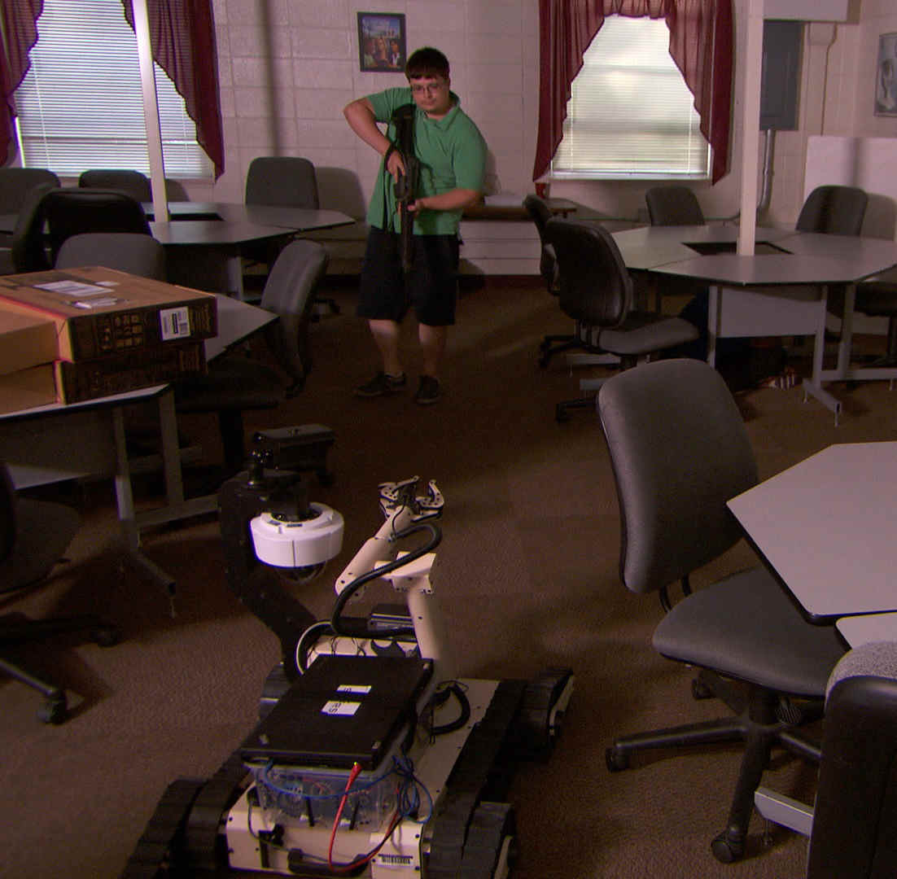
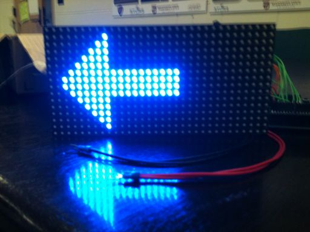
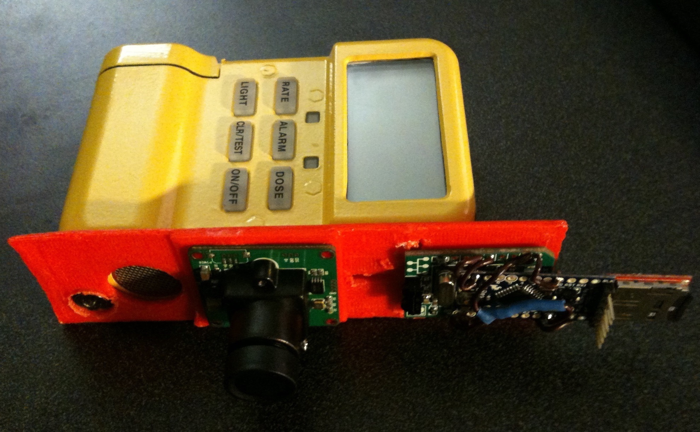
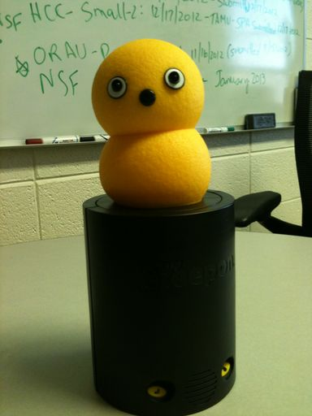

STARS Lab, Mississippi State
Therabot is a cross-disciplinary collaboration with the goal of designing a robot for use in treating PTSD and helping those who have suffered childhood or domestic abuse. The robot is currently in development and will be a furry, dog-like creature that will be capable of responding to hugging, petting, and squeezing; recognizing the origin of sounds; and sensing angular and linear motion. In response to these stimuli, it will make noises and move its legs, head, ears, and tail.
Therabot is designed to be both a therapy tool and a research robot. It will be able to record audio so that therapists can record instructions for their patients. This will allow patients to engage in activities with the robot, such as breathing exercises, while in a safe place. On the research side, all of the robot's code is written in ROS, allowing researchers to easily modify Therabot's code to suit their needs.

STARS Lab, Mississippi State
This project is a continuation of the Robot Intent and Control study and focuses on developing and autonomous robot that can operate in close proximity with a SWAT team. The robot will be capable of navigating and mapping buildings, deploying various distractionary devices such as sirens and strobe lights, and sending real time video and audio to the team. Using interfaces developed as part of the Robot Intent and Control study, the team will be able to send suggestions and override commands to the robot, and it will display its its planned actions and goals to the team.
The software for the robot is being developed in ROS. Currently, we are using a modified version of the ROS navigation stack to provide path planning and obstacle avoidance, gmapping for mapping, and custom action servers to communicate with android devices used by the team.

STARS Lab, Mississippi State
The goals of this study were to determine the most effective method for a robot to convey pending actions to nearby users as well as the most intuitive way for an operator to override the robot's pending action with a new command.
We tested three devices for displaying the robot's intent as well as four devices for overriding the robot's current action. We then evaluated the display interfaces based on how easily subjects could follow a robot through a maze using each interface, and the intent interfaces based on how well subjects could use each interface to help a semi-autonomous robot quickly navigate a maze.
A paper containing data pertaining to the control devices was presented at the 2014 Advanced Robotics and its Social Impacts (ARSO 2014) conference in Chicago, IL.

CRASAR, Texas A & M
I participated in the 2013 Computing for Disasters REU where I was an observer at a live nuclear exercise. Emergency responders attempted to use a Packbot robot to locate radiation inside a building, but were unable to isolate the source due to inconsistent readings. Eventually, one of the operators tried driving the robot backwards and was able to find the source almost immediately. After the exercise, I analyzed the data and discovered that because the Packbot's radiation sensor is on the back of the robot, the robot's chassis can obstruct the sensor so that it only gathers accurate data when the robot is driven backward.
I designed a payload designed to be mounted on the front of a robot for accurate readings. The payload holds a radiation sensor as well as a small camera and can transmit readings over serial bus and log them to an onboard SD card. I wrote a paper based on my summer findings that I presented at the 2013 Safety, Security, and Rescue Robotics (SSRR 2013) conference in Sweden.

STARS Lab, Mississippi State
The Keepon is a small robot created by BeatBots for autism research. Unfortunately, the lab version costs $10,000. Luckily the creators made the $50 toy version relatively easy to hack. Using an arduino and a python script I have set up a myKeepon to be controlled by an Xbox controller or in batch mode by a text file of commands. Eventually, this robot will be used to study the effect of a robot's form factor on how subjects interact with it.
This robot is currently being redesigned to use the I2C pads on myKeepon's internal PCB. It will be controlled through a ROS action server communicating with an Arduino loaded with Firmata. Eventually sound recording and playback functionality will be added to make the robot more viable as a research tool.